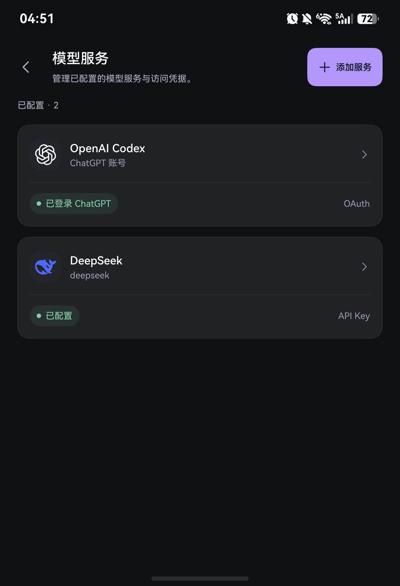
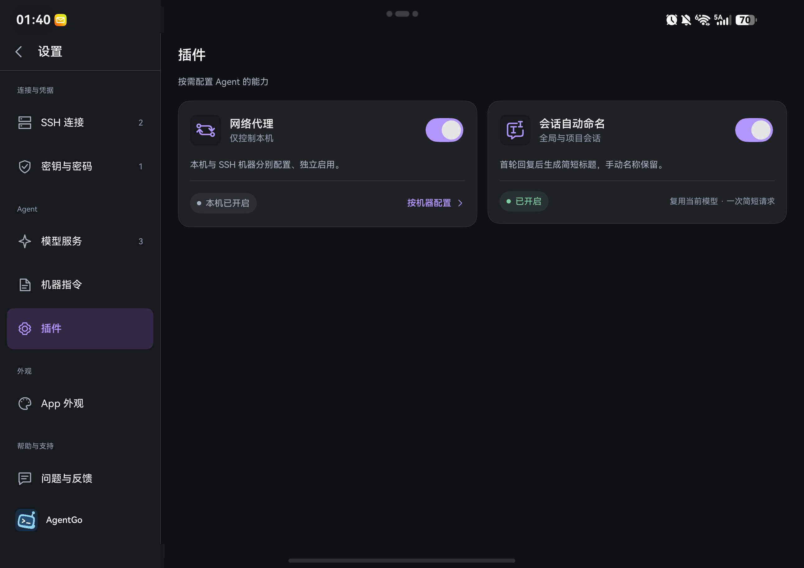

01 CODING AGENT
让想法进入项目
在远程项目目录发起任务，跟随对话查看工具执行过程与文件改动。支持会话分叉、上下文压缩与项目 Skills。
SSH、Coding Agent、代码工作台。
连接你的远程机器，
让手中的项目，随你继续。
ON DEVICE. IN YOUR HANDS.


以上为折叠屏在窄屏与展开状态下的真实开发版本画面，点击可查看原图。实际外观随版本、主题及设备而变化。
HARMONYOS. EVERY SIZE.
从掌心的小屏，到展开的大屏。
让导航、对话与工具，找到各自合适的位置。
描述任务
查看执行过程
保留当前上下文
文件与 Diff
Git 历史
交互式终端
可用空间足够时，一边跟进 Agent，一边检查文件、Diff 或终端；折起后回到单页浏览。
依据当前可用宽度调整布局，兼顾横竖屏和分屏窗口。
展开与折起延续当前会话、表单和 SSH 连接，不隐式进入全屏。
空间充足时保留项目导航，把更多位置留给对话和工作内容。
以上展示布局逻辑。应用声明支持 phone、tablet、2in1，具体设备与系统版本的安装要求以发行说明为准。查看设备与窗口使用说明
ONE WORKSPACE. LESS FRICTION.
把远程开发中常用的几件事，
放进一个随手可用的工作台。
在远程项目目录发起任务，跟随对话查看工具执行过程与文件改动。支持会话分叉、上下文压缩与项目 Skills。
浏览真实远程文件、检查代码 Diff、查看 Git 历史。让任务进展与代码变化，在一个工作台里对应起来。
打开交互式 SSH 终端，用熟悉的命令继续工作。终端标签、快捷键与独立字体设置，照顾每一次输入。
YOUR TOOLS. YOUR CONTROL.
连接哪台机器，使用哪个模型，
授予哪些权限，都有清楚的边界。
通过 SSH 进入熟悉的开发环境。首次连接或主机指纹变化时，需要你确认。
配置支持的 API Key 服务，或使用 OpenAI Codex 设备码登录，并按机器管理授权。
凭据使用系统 HUKS 加密保存。离开应用后自动锁定凭据访问，已有连接可继续。
模型请求由你选择的模型服务处理；使用时请同时了解对应服务的数据政策。
GOOD TO KNOW
AgentGo 声明支持 HarmonyOS 手机、平板和二合一设备，并针对折叠屏与不同窗口宽度调整布局。当前工程目标为 HarmonyOS 6.1，最低 API 12；具体安装要求以未来公开发行说明为准。远程 Agent 运行包目前支持 macOS ARM64 和 Linux x64。
远程 Agent 任务可以在手机断开后继续执行。手机本地助手受系统后台运行额度限制，回到前台后会尝试恢复未完成任务。普通交互式终端与远程 Agent 任务不同，不能保证断开后继续运行。
需要配置受支持的模型账号或 API Key，也可以使用 OpenAI Codex 设备码登录。模型可用范围取决于运行环境和服务支持情况；模型服务可能产生独立费用，具体以服务商为准。
目前公开的是这份官网的源码，采用 MIT 许可证。应用本体的源码和发行许可独立管理；官网开源不代表应用本体开源。品牌图标保留其品牌权利。
TAKE YOUR WORK WITH YOU.
AgentGo · 为随时继续的开发而打造。